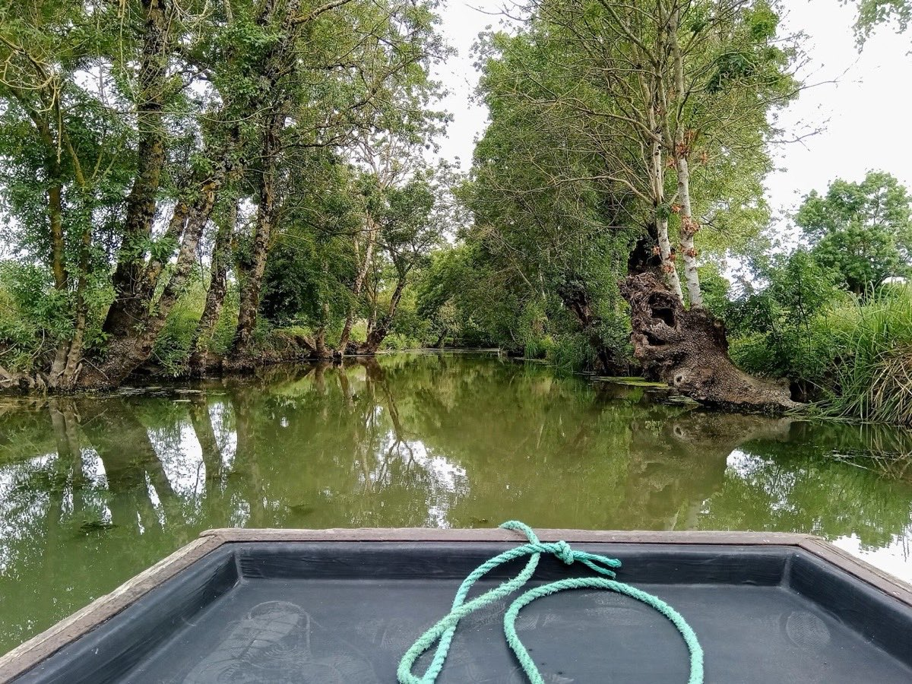
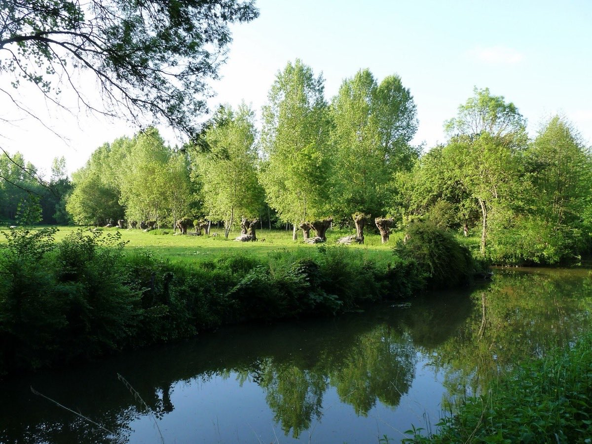
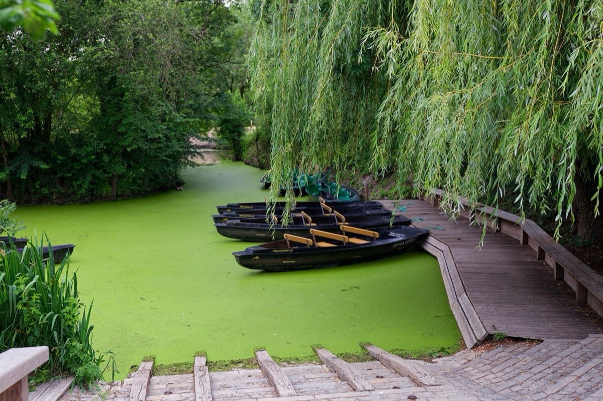

Paysages
Un paysage d'eau et de prairies, dessiné depuis huit siècles par ceux qui y vivent.
Entre Niort et l'océan, sur trois départements — Deux-Sèvres, Vendée et Charente-Maritime —, le Marais poitevin occupe l'ancien golfe des Pictons, que la mer a peu à peu abandonné. C'est la deuxième zone humide de France après la Camargue. On le croit sauvage : il est en réalité l'œuvre patiente des hommes, qui l'ont drainé, canalisé et entretenu depuis le Moyen Âge.
À l'est, autour de Coulon, Arçais et Maillezais, la « Venise verte » : un labyrinthe de canaux et de conches ombragés, que l'hiver inonde et qui sert de réservoir naturel lors des crues. On y circule encore en barque plate.
Protégé des eaux par des digues et parcouru de grands canaux rectilignes, il offre de vastes horizons de prairies et de cultures, où l'élevage a longtemps dominé.
Vers l'ouest, la baie de l'Aiguillon, réserve naturelle nationale, accueille chaque hiver des dizaines de milliers d'oiseaux d'eau, canards et limicoles venus du nord de l'Europe.

Dès le XIIIe siècle, les moines des grandes abbayes — Maillezais, Saint-Michel-en-l'Herm, Nieul-sur-l'Autise — creusent les premiers canaux, dont le canal des Cinq-Abbés. Au XVIIe siècle, de grands travaux de dessèchement gagnent de nouvelles terres. Le réseau hydraulique qui en résulte, fait de canaux, de fossés, de digues et de vannes, doit être entretenu en permanence.

Taillé régulièrement à hauteur d'homme, le frêne forme une « tête » d'où repartent les branches. Ce bois fournissait le chauffage des fermes ; les racines tiennent les berges. Ces alignements, qui donnent au marais son visage, ne survivent que s'ils sont entretenus.
À fond plat, menée à la « pigouille » ou à la rame, la barque — le « batai » — servait à tout : transporter le foin, les bêtes, les récoltes. Elle reste le meilleur moyen de découvrir le marais mouillé.
Cram-Chaban, Courçon, La Laigne, La Grève-sur-Mignon et Saint-Hilaire-la-Palud se situent au sud-est du Parc, là où le marais rejoint la plaine d'Aunis. Le paysage y est fait de prairies humides, de canaux — dont celui du Mignon —, de haies et de grands horizons ouverts. On y trouve aussi un patrimoine bâti remarquable, comme le château de Sazay et le logis de Beaulieu, tous deux monuments historiques.
Le marais a déjà beaucoup perdu au XXe siècle : prairies retournées pour les cultures, niveaux d'eau abaissés, haies arrachées, frênes non entretenus. Ce qui reste demande de la vigilance : gestion de l'eau face aux sécheresses, maintien de l'élevage extensif qui entretient les prairies, respect de la tranquillité des sites de nidification et de migration.
C'est aussi pour cela que nous suivons de près les projets qui concernent le territoire, comme les projets éoliens actuellement à l'étude.

